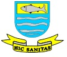

Contato
Secretaria Municipal de Saúde de Lambari/MG
- 📧 Email: saude@lambari.mg.gov.br
- 📞 Telefone: (35) 3271-4032
- 📍 Endereço: Rua Fabiano Pereira Krauss, s/n – Centro

Governo Diferente, Gestão Eficiente
Secretaria Municipal de Saúde de Lambari/MG